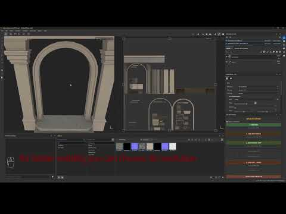
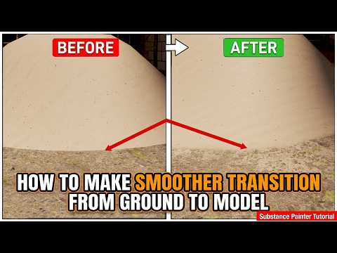

<title>Substance Bridge</title>
<link rel="preconnect" href="https://fonts.googleapis.com">
<link rel="preconnect" href="https://fonts.gstatic.com" crossorigin>
<link rel="stylesheet" href="https://fonts.googleapis.com/css2?family=Archivo:wght@700;800;900&family=IBM+Plex+Sans:wght@400;500;600&family=IBM+Plex+Mono:wght@400;500&display=swap">
<style>
  :root {
    --bg: #eef0f1;
    --surface: #e3e7e9;
    --surface-2: #ffffff;
    --border: #c5cbd0;
    --border-soft: #d5d9dc;
    --text: #1a2024;
    --text-muted: #5c6670;
    --accent: #a8481f;
    --accent-2: #3d5a6c;
    --accent-soft: rgba(168,72,31,0.10);
    --accent-2-soft: rgba(61,90,108,0.10);
    --mono-bg: #dfe3e5;
    --sem-done: #2f6b46;
    --sem-pending: #6d6a4d;
    --sem-limit: #9c5a17;
    --shadow: 0 1px 0 rgba(20,24,27,0.04);
  }
  @media (prefers-color-scheme: dark) {
    :root:not([data-theme="light"]) {
      --bg: #14181b;
      --surface: #1b2025;
      --surface-2: #20262b;
      --border: #2b3238;
      --border-soft: #262c31;
      --text: #e9e6e0;
      --text-muted: #9aa3aa;
      --accent: #dd8148;
      --accent-2: #7fa4b8;
      --accent-soft: rgba(221,129,72,0.14);
      --accent-2-soft: rgba(127,164,184,0.12);
      --mono-bg: #20262b;
      --sem-done: #5fb37e;
      --sem-pending: #a3a087;
      --sem-limit: #d99a4d;
      --shadow: none;
    }
  }
  :root[data-theme="dark"] {
    --bg: #14181b;
    --surface: #1b2025;
    --surface-2: #20262b;
    --border: #2b3238;
    --border-soft: #262c31;
    --text: #e9e6e0;
    --text-muted: #9aa3aa;
    --accent: #dd8148;
    --accent-2: #7fa4b8;
    --accent-soft: rgba(221,129,72,0.14);
    --accent-2-soft: rgba(127,164,184,0.12);
    --mono-bg: #20262b;
    --sem-done: #5fb37e;
    --sem-pending: #a3a087;
    --sem-limit: #d99a4d;
    --shadow: none;
  }

  * { box-sizing: border-box; }
  html { scroll-behavior: smooth; }
  body {
    margin: 0;
    background: var(--bg);
    color: var(--text);
    font-family: 'IBM Plex Sans', -apple-system, 'Segoe UI', sans-serif;
    font-size: 16px;
    line-height: 1.55;
    -webkit-font-smoothing: antialiased;
  }
  @media (prefers-reduced-motion: reduce) {
    html { scroll-behavior: auto; }
    * { animation: none !important; transition: none !important; }
  }

  h1, h2, h3 {
    font-family: 'Archivo', 'Arial Narrow', sans-serif;
    font-weight: 900;
    text-wrap: balance;
    margin: 0;
    letter-spacing: -0.01em;
  }
  code, .mono { font-family: 'IBM Plex Mono', 'SFMono-Regular', Consolas, monospace; }

  a { color: var(--accent); }

  .wrap { max-width: 920px; margin: 0 auto; padding-inline: 24px; }

  /* ---------- header ---------- */
  header.top {
    position: sticky; top: 0; z-index: 20;
    background: var(--bg);
    border-bottom: 1px solid var(--border);
  }
  .top-row {
    display: flex; align-items: baseline; justify-content: space-between;
    gap: 16px; padding-block: 16px 12px;
    flex-wrap: wrap;
  }
  .brand { display: flex; align-items: baseline; gap: 10px; flex-wrap: wrap; }
  .brand h1 { font-size: 22px; }
  .brand .tagline { color: var(--text-muted); font-size: 13px; }
  .version-badge {
    font-family: 'IBM Plex Mono', monospace; font-size: 12px; font-weight: 500;
    color: var(--accent); border: 1px solid var(--accent); background: var(--accent-soft);
    padding: 4px 9px; border-radius: 2px; white-space: nowrap;
  }
  nav.pills {
    display: flex; gap: 6px; overflow-x: auto; padding-block: 0 12px;
    -webkit-overflow-scrolling: touch; scrollbar-width: none;
  }
  nav.pills::-webkit-scrollbar { display: none; }
  nav.pills a {
    flex: 0 0 auto;
    font-family: 'IBM Plex Mono', monospace; font-size: 11.5px; text-decoration: none;
    color: var(--text-muted); border: 1px solid var(--border); border-radius: 2px;
    padding: 5px 10px; white-space: nowrap;
  }
  nav.pills a.active { color: var(--accent); border-color: var(--accent); background: var(--accent-soft); }

  main { padding-block: 8px 40px; }

  /* ---------- hero ---------- */
  .eyebrow {
    font-family: 'IBM Plex Mono', monospace; font-size: 12px; font-weight: 500;
    letter-spacing: 0.08em; text-transform: uppercase; color: var(--accent);
    margin-bottom: 10px; display: block;
  }
  .hero { padding-block: 28px 6px; }
  .hero p.lead { max-width: 62ch; font-size: 17px; color: var(--text); margin: 0; }
  .hero p.lead code { background: var(--mono-bg); padding: 1px 5px; border-radius: 2px; font-size: 0.92em; }

  .stat-grid {
    display: grid; grid-template-columns: repeat(auto-fit, minmax(170px, 1fr));
    gap: 1px; background: var(--border); border: 1px solid var(--border);
    margin-top: 26px; border-radius: 2px; overflow: hidden;
  }
  .stat {
    background: var(--surface); padding: 16px 16px 14px;
  }
  .stat .num { font-family: 'IBM Plex Mono', monospace; font-weight: 500; font-size: 26px; color: var(--accent); font-variant-numeric: tabular-nums; }
  .stat .label { font-size: 12.5px; color: var(--text-muted); margin-top: 4px; }

  hr.rule { border: none; border-top: 1px solid var(--border); margin: 40px 0 0; }

  /* ---------- chapters ---------- */
  section.chapter { padding-block: 46px 4px; scroll-margin-top: 96px; }
  section.chapter .chnum {
    font-family: 'IBM Plex Mono', monospace; color: var(--accent); font-size: 13px; font-weight: 500;
  }
  section.chapter h2 { font-size: 30px; margin-top: 8px; }
  section.chapter .intro { color: var(--text-muted); max-width: 66ch; margin-top: 10px; font-size: 15px; }

  .badge {
    display: inline-flex; align-items: center; gap: 5px;
    font-family: 'IBM Plex Mono', monospace; font-size: 10.5px; font-weight: 500; letter-spacing: 0.04em;
    padding: 2px 8px; border-radius: 2px; white-space: nowrap; text-transform: uppercase;
  }
  .badge.max { color: var(--accent-2); border: 1px solid var(--accent-2); background: var(--accent-2-soft); }
  .badge.sp  { color: var(--accent); background: var(--accent); color: var(--bg); border: 1px solid var(--accent); }

  /* ---------- handoff diagram ---------- */
  .handoff {
    display: grid; grid-template-columns: 1fr 74px 1.2fr 74px 1fr;
    align-items: stretch; gap: 0; margin-top: 26px;
  }
  .handoff .box {
    background: var(--surface); border: 1px solid var(--border); padding: 16px;
  }
  .handoff .box h3 { font-size: 14px; font-family: 'IBM Plex Sans'; font-weight: 600; }
  .handoff .box .sub { color: var(--text-muted); font-size: 12.5px; margin-top: 4px; }
  .handoff .hub .mono { display: block; font-size: 12.5px; line-height: 1.9; margin-top: 10px; white-space: pre; }
  .handoff .hub .mono b { color: var(--text); font-weight: 500; }
  .handoff .hub .mono .c { color: var(--text-muted); }
  .handoff .arrowcell {
    display: flex; flex-direction: column; align-items: center; justify-content: center;
    gap: 4px; padding: 8px 2px; text-align: center;
  }
  .handoff .arrowcell .glyph { font-size: 20px; color: var(--accent); line-height: 1; }
  .handoff .arrowcell .cap { font-family: 'IBM Plex Mono', monospace; font-size: 9.5px; color: var(--text-muted); line-height: 1.35; }

  .callout {
    border-left: 3px solid var(--accent); background: var(--surface);
    padding: 13px 16px; margin-top: 20px; font-size: 14px;
  }
  .callout b { color: var(--text); }

  /* ---------- step list ---------- */
  .steps { margin-top: 26px; display: flex; flex-direction: column; }
  .step { display: grid; grid-template-columns: 40px 1fr; gap: 14px; padding-block: 16px; border-top: 1px solid var(--border-soft); }
  .step:first-child { border-top: 1px solid var(--border); }
  .step .n { font-family: 'IBM Plex Mono', monospace; font-size: 13px; color: var(--text-muted); padding-top: 2px; }
  .step .head { display: flex; align-items: center; gap: 10px; flex-wrap: wrap; margin-bottom: 4px; }
  .step .head h4 { font-family: 'IBM Plex Sans'; font-size: 15px; font-weight: 600; margin: 0; }
  .step p { margin: 0; color: var(--text-muted); font-size: 14px; max-width: 66ch; }
  .step code { background: var(--mono-bg); padding: 1px 5px; border-radius: 2px; font-size: 0.9em; color: var(--text); }

  /* ---------- effect cards ---------- */
  .effect-grid { display: grid; grid-template-columns: repeat(3, 1fr); gap: 1px; background: var(--border); border: 1px solid var(--border); margin-top: 26px; }
  .effect {
    background: var(--surface); padding: 18px 16px;
    display: flex; flex-direction: column; gap: 8px;
  }
  .effect .idx { font-family: 'IBM Plex Mono', monospace; color: var(--accent); font-size: 12px; }
  .effect h4 { font-family: 'IBM Plex Sans'; font-size: 15.5px; font-weight: 600; margin: 0; }
  .effect p { margin: 0; font-size: 13.5px; color: var(--text-muted); flex: 1; }
  .effect .params { font-family: 'IBM Plex Mono', monospace; font-size: 11px; color: var(--text-muted); background: var(--mono-bg); padding: 8px 10px; border-radius: 2px; line-height: 1.6; }

  /* ---------- tables ---------- */
  .tbl-wrap { overflow-x: auto; margin-top: 22px; border: 1px solid var(--border); }
  table { width: 100%; border-collapse: collapse; font-size: 13.5px; min-width: 520px; }
  thead th {
    text-align: left; font-family: 'IBM Plex Mono', monospace; font-weight: 500; font-size: 11px;
    letter-spacing: 0.05em; text-transform: uppercase; color: var(--text-muted);
    background: var(--surface); padding: 10px 14px; border-bottom: 1px solid var(--border);
  }
  tbody td { padding: 10px 14px; border-bottom: 1px solid var(--border-soft); vertical-align: top; }
  tbody tr:last-child td { border-bottom: none; }
  tbody td.code { font-family: 'IBM Plex Mono', monospace; font-size: 12.5px; color: var(--accent); white-space: nowrap; }
  .status-dot { display: inline-block; width: 8px; height: 8px; border-radius: 50%; margin-right: 8px; position: relative; top: -1px; }
  .status-dot.done { background: var(--sem-done); }
  .status-dot.pending { background: var(--sem-pending); }
  .status-dot.limit { background: var(--sem-limit); }

  /* ---------- quirks ---------- */
  .quirks { margin-top: 24px; display: flex; flex-direction: column; }
  .quirk { display: flex; gap: 12px; padding-block: 14px; border-top: 1px solid var(--border-soft); }
  .quirk:first-child { border-top: 1px solid var(--border); }
  .quirk .mark { color: var(--accent); font-family: 'IBM Plex Mono', monospace; padding-top: 2px; }
  .quirk p { margin: 0; font-size: 14.5px; color: var(--text-muted); }
  .quirk p b { color: var(--text); font-weight: 600; }

  /* ---------- two-pass box (UV chapter) ---------- */
  .pass-grid { display: grid; grid-template-columns: 1fr 1fr; gap: 1px; background: var(--border); border: 1px solid var(--border); margin-top: 24px; }
  .pass { background: var(--surface); padding: 16px; }
  .pass .idx { font-family: 'IBM Plex Mono', monospace; font-size: 11px; color: var(--text-muted); text-transform: uppercase; letter-spacing: 0.05em; }
  .pass h4 { font-family: 'IBM Plex Sans'; font-size: 14.5px; font-weight: 600; margin: 6px 0 6px; }
  .pass p { margin: 0; font-size: 13.5px; color: var(--text-muted); }
  .pass code { background: var(--mono-bg); padding: 1px 5px; border-radius: 2px; font-size: 0.88em; color: var(--text); }

  /* ---------- distribution list ---------- */
  .dist { margin-top: 22px; display: flex; flex-direction: column; gap: 14px; }
  .dist-item { display: flex; gap: 14px; }
  .dist-item .dot { width: 6px; height: 6px; border-radius: 50%; background: var(--accent); margin-top: 8px; flex: 0 0 auto; }
  .dist-item p { margin: 0; font-size: 14.5px; color: var(--text-muted); }
  .dist-item p b { color: var(--text); }
  .dist-item code { background: var(--mono-bg); padding: 1px 5px; border-radius: 2px; font-size: 0.88em; color: var(--text); }

  /* ---------- video cards ---------- */
  .video-grid { display: grid; grid-template-columns: repeat(2, 1fr); gap: 1px; background: var(--border); border: 1px solid var(--border); margin-top: 26px; }
  .video-card { background: var(--surface); display: flex; flex-direction: column; text-decoration: none; color: inherit; }
  .video-card .thumb { position: relative; aspect-ratio: 16/9; overflow: hidden; background: var(--mono-bg); }
  .video-card .thumb img { width: 100%; height: 100%; object-fit: cover; display: block; filter: saturate(0.85); transition: filter .15s ease, transform .15s ease; }
  .video-card:hover .thumb img { filter: saturate(1); transform: scale(1.03); }
  .video-card .play {
    position: absolute; inset: 0; display: flex; align-items: center; justify-content: center;
  }
  .video-card .play span {
    width: 46px; height: 46px; border-radius: 50%; background: rgba(20,24,27,0.55);
    display: flex; align-items: center; justify-content: center; backdrop-filter: blur(1px);
  }
  .video-card .play svg { width: 16px; height: 16px; fill: #f2efe9; margin-left: 2px; }
  .video-card .meta { padding: 14px 16px 16px; display: flex; flex-direction: column; gap: 6px; flex: 1; }
  .video-card .kicker { font-family: 'IBM Plex Mono', monospace; font-size: 10.5px; color: var(--accent); text-transform: uppercase; letter-spacing: 0.06em; }
  .video-card h4 { font-family: 'IBM Plex Sans'; font-size: 14.5px; font-weight: 600; margin: 0; }
  .video-card p { margin: 0; font-size: 13px; color: var(--text-muted); flex: 1; }
  .video-card .link { font-family: 'IBM Plex Mono', monospace; font-size: 11.5px; color: var(--accent); margin-top: 2px; }

  footer {
    border-top: 1px solid var(--border); margin-top: 48px; padding-block: 20px 40px;
  }
  footer p { margin: 0; font-size: 12.5px; color: var(--text-muted); font-family: 'IBM Plex Mono', monospace; }

  .lang-switch { display: flex; gap: 4px; }
  .lang-switch a {
    font-family: 'IBM Plex Mono', monospace; font-size: 11px; text-decoration: none;
    color: var(--text-muted); border: 1px solid var(--border); border-radius: 2px; padding: 4px 8px;
  }
  .lang-switch a.current { color: var(--accent); border-color: var(--accent); background: var(--accent-soft); }

  @media (max-width: 720px) {
    .handoff { grid-template-columns: 1fr; }
    .handoff .arrowcell { flex-direction: row; padding: 10px 4px; }
    .handoff .arrowcell .glyph { transform: rotate(90deg); }
    .effect-grid { grid-template-columns: 1fr; }
    .pass-grid { grid-template-columns: 1fr; }
    .video-grid { grid-template-columns: 1fr; }
    .step { grid-template-columns: 28px 1fr; }
    section.chapter h2 { font-size: 25px; }
  }
</style>

<header class="top">
  <div class="wrap top-row">
    <div class="brand">
      <h1>Substance Bridge</h1>
      <span class="tagline">двусторонний мост 3ds Max ↔ Substance Painter для PBR-текстурирования</span>
    </div>
    <div style="display:flex; align-items:center; gap:10px;">
      <nav class="lang-switch">
        <a href="https://claude.ai/artifact/KtDqsejqcHcCQA7Gb3EnyR">EN</a>
        <a href="https://claude.ai/artifact/PQTUJbZ5iDUyhSqocwRfKb">FR</a>
        <a class="current" href="https://claude.ai/artifact/RpWNGEVPs8dtYRRKybwWxa">RU</a>
      </nav>
      <span class="version-badge">v2.7.0</span>
    </div>
  </div>
  <div class="wrap">
    <nav class="pills" id="chapter-nav">
      <a href="#ch-01" data-n="1">01 Мост</a>
      <a href="#ch-02" data-n="2">02 Полный цикл</a>
      <a href="#ch-03" data-n="3">03 UV</a>
      <a href="#ch-04" data-n="4">04 Эффекты</a>
      <a href="#ch-05" data-n="5">05 Материалы</a>
      <a href="#ch-06" data-n="6">06 Особенности</a>
      <a href="#ch-07" data-n="7">07 Состояние</a>
      <a href="#ch-08" data-n="8">08 Видео</a>
    </nav>
  </div>
</header>

<main class="wrap">

  <div class="hero">
    <span class="eyebrow">Техническое описание</span>
    <p class="lead">
      Substance Bridge автоматизирует PBR-текстурирование между 3ds Max и Substance Painter.
      Одна кнопка в Max проверяет UV, пакует имеющиеся текстуры, экспортирует FBX и открывает Painter.
      Одна кнопка в Painter возвращает готовые 4K-текстуры назад в Max и сама назначает их материалам.
      Оба процесса не знают друг о друге — обмен идёт исключительно через файлы в общей папке
      <code>C:\SubstanceBridge\</code>, которую MAXScript-таймер опрашивает раз в секунду.
    </p>
    <div class="stat-grid">
      <div class="stat"><div class="num">3</div><div class="label">процедурных эффекта — Dirt, Weathering, Ground Dirt</div></div>
      <div class="stat"><div class="num">4</div><div class="label">PBR-канала в round-trip — BaseColor, Roughness, Metallic, Normal</div></div>
      <div class="stat"><div class="num">1с</div><div class="label">интервал опроса общей папки таймером</div></div>
      <div class="stat"><div class="num">2</div><div class="label">материала с поддержкой — VRayMtl, PhysicalMaterial</div></div>
    </div>
  </div>

  <hr class="rule">

  <!-- 01 -->
  <section class="chapter" id="ch-01">
    <span class="chnum">01</span>
    <h2>Два процесса, одна папка</h2>
    <p class="intro">3ds Max и Substance Painter никогда не соединены напрямую — ни API, ни сокета.
    Весь протокол обмена — это появление и исчезновение файлов в общей папке-хабе на диске.</p>

    <div class="handoff">
      <div class="box">
        <span class="badge max">3ds Max</span>
        <h3 style="margin-top:8px">Substance_Bridge_Injector.mcr</h3>
        <div class="sub">MAXScript, живёт в userMacros. UI, проверка UV, запекание, экспорт FBX, автоимпорт обратно.</div>
      </div>
      <div class="arrowcell">
        <span class="glyph">→</span>
        <span class="cap">SP_Export.fbx<br>temp_bkd\*.png</span>
      </div>
      <div class="box hub">
        <span class="badge" style="color:var(--text-muted);border:1px solid var(--border)">общая папка</span>
        <h3 style="margin-top:8px">C:\SubstanceBridge\</h3>
        <span class="mono"><b>SP_Export.fbx</b>       <span class="c">← модель из Max</span>
<b>temp_bkd\*.png</b>     <span class="c">← запечённые текстуры</span>
<b>tex_sp\*.png</b>       <span class="c">→ финальные 4K из Painter</span>
<b>*.spp</b>              <span class="c">проект Painter, если есть</span></span>
      </div>
      <div class="arrowcell">
        <span class="glyph">←</span>
        <span class="cap">tex_sp\*.png</span>
      </div>
      <div class="box">
        <span class="badge sp">Painter</span>
        <h3 style="margin-top:8px">SP_To_Max_Bridge.py</h3>
        <div class="sub">Python-плагин SP, PySide2/6. Автозагрузка FBX, эффекты, экспорт 4K обратно в Max.</div>
      </div>
    </div>

    <div class="callout">
      <b>Папка удаляется полностью</b> (<code>deleteFolderRecursive</code>) сразу после успешного импорта
      в Max — намеренно, чтобы каждый следующий запуск начинался с чистого состояния.
    </div>
  </section>

  <hr class="rule">

  <!-- 02 -->
  <section class="chapter" id="ch-02">
    <span class="chnum">02</span>
    <h2>Полный цикл</h2>
    <p class="intro">От выделенных объектов в Max до назначенных материалов в Max — восемь шагов,
    которые переключаются между двумя программами без участия человека, кроме самой работы над текстурой.</p>

    <div class="steps">
      <div class="step">
        <div class="n">01</div>
        <div>
          <div class="head"><span class="badge max">Max</span><h4>SEND TO PAINTER</h4></div>
          <p>Клик по кнопке. Если ничего не выделено — messageBox «No objects selected» и выход.</p>
        </div>
      </div>
      <div class="step">
        <div class="n">02</div>
        <div>
          <div class="head"><span class="badge max">Max</span><h4>Проверка UV</h4></div>
          <p><code>checkAndEnsureUV()</code> двумя проходами: сперва объекты без UV, затем объекты с плохим
          качеством развёртки. Пробелы закрываются автоматически через <code>step1_CreateUV1_Direct()</code>.</p>
        </div>
      </div>
      <div class="step">
        <div class="n">03</div>
        <div>
          <div class="head"><span class="badge max">Max</span><h4>Унификация материалов</h4></div>
          <p><code>ensureObjectNamedMaterials()</code> копирует и переименовывает материал под имя объекта,
          если они расходятся — Painter создаёт один Texture Set на материал, без этого шага объекты теряются.</p>
        </div>
      </div>
      <div class="step">
        <div class="n">04</div>
        <div>
          <div class="head"><span class="badge max">Max</span><h4>Запекание и экспорт</h4></div>
          <p>Имеющиеся текстуры копируются в <code>temp_bkd\</code>, сцена уходит в FBX (Y-up, см, касательные,
          только выделенное), запускается Substance Painter.</p>
        </div>
      </div>
      <div class="step">
        <div class="n">05</div>
        <div>
          <div class="head"><span class="badge sp">Painter</span><h4>Автозагрузка</h4></div>
          <p>Подхватывает <code>SP_Export.fbx</code>, импортирует <code>temp_bkd\</code> как ресурсы, печёт мешмапы
          (Normal, World Space Normal, AO, Position, Curvature — 4096×4096) и назначает их на слой «Base Baked».</p>
        </div>
      </div>
      <div class="step">
        <div class="n">06</div>
        <div>
          <div class="head"><span class="badge sp">Painter</span><h4>Художник работает</h4></div>
          <p>ADD DIRT / ADD WEATHERING / ADD GROUND DIRT — каждый со своим слайдером интенсивности. Чекбокс
          «Apply to all models» прокидывает эффект сразу на все Texture Sets сцены.</p>
        </div>
      </div>
      <div class="step">
        <div class="n">07</div>
        <div>
          <div class="head"><span class="badge sp">Painter</span><h4>SEND TO MAX</h4></div>
          <p>Экспорт 4K PNG по каналам <code>_D / _R / _M / _N</code> (+ <code>_A</code> для cutout-моделей) в
          <code>tex_sp\</code>, Painter закрывается.</p>
        </div>
      </div>
      <div class="step">
        <div class="n">08</div>
        <div>
          <div class="head"><span class="badge max">Max</span><h4>Автоимпорт</h4></div>
          <p>Таймер <code>tmr_checkSubstance</code> (опрос раз в секунду, двойная проверка размера файла с паузой
          0.2с) подхватывает новые PNG, переносит в <code>textures\</code> сцены, назначает на VRayMtl/PhysicalMaterial
          и удаляет <code>C:\SubstanceBridge\</code>.</p>
        </div>
      </div>
    </div>
  </section>

  <hr class="rule">

  <!-- 03 -->
  <section class="chapter" id="ch-03">
    <span class="chnum">03</span>
    <h2>Автоматическое восстановление UV</h2>
    <p class="intro">Параметрические примитивы и разбитая развёртка — самая частая причина, по которой Painter
    не может принять модель. Bridge проверяет это сам и исправляет без единого диалога «нет UV».</p>

    <div class="pass-grid">
      <div class="pass">
        <span class="idx">Проход 1</span>
        <h4>Объекты вообще без UV</h4>
        <p><code>hasUVChannel1</code> — true, если есть модификатор Unwrap_UVW или объект собран в Editable_Poly/Mesh
        с <code>numTVerts &gt; 0</code>. Параметрический примитив без Unwrap — false.</p>
      </div>
      <div class="pass">
        <span class="idx">Проход 2</span>
        <h4>Объекты с плохим качеством</h4>
        <p><code>validateUVQuality</code> возвращает <code>outOfBounds</code> (вершина за пределами 0–1) и
        <code>hasOverlaps</code> (суммарная площадь UV-граней &gt; 1.05).</p>
      </div>
    </div>

    <div class="callout">
      <b>Двойная упаковка.</b> Первый проход с вращением выравнивает острова (Unfold3D), затем
      <code>autoOrientUVs()</code> исправляет перевёрнутые на 90° стены, второй проход без вращения сохраняет
      стены вертикальными.
    </div>
  </section>

  <hr class="rule">

  <!-- 04 -->
  <section class="chapter" id="ch-04">
    <span class="chnum">04</span>
    <h2>Система эффектов</h2>
    <p class="intro">Три процедурных слоя на стороне Painter, каждый — отдельная кнопка со слайдером
    интенсивности. Живут полностью в генераторах и смарт-масках, без ручной росписи.</p>

    <div class="effect-grid">
      <div class="effect">
        <span class="idx">1 · ADD DIRT</span>
        <h4>Пыль и грязь</h4>
        <p>Fill-слой «Dirt», цвет только в BaseColor, чёрная маска + генератор Dirt. Слайдер управляет
        <code>dirt_level</code> каждого генератора.</p>
        <div class="params">level 0.51 · contrast 0.45<br>grunge_amount 0.3 · grunge_scale 4<br>edges_masking 0.5</div>
      </div>
      <div class="effect">
        <span class="idx">2 · ADD WEATHERING</span>
        <h4>Потёки непогоды</h4>
        <p>Ищет пользовательскую Smart Mask <code>SB_Weathering</code> (World Space Normals + Dirt Leak Dry +
        Blur Directional + Position — потёки под подоконниками). Нет маски — фолбэк: AO + текстура потёков, Multiply.</p>
        <div class="params">fill «Weather Streaks»<br>смарт-маска в приоритете<br>слайдер → set_opacity слоёв</div>
      </div>
      <div class="effect">
        <span class="idx">3 · ADD GROUND DIRT</span>
        <h4>Грязь снизу</h4>
        <p>Fill «Ground Dirt», BaseColor — текстура травы/камня (Triplanar, scale 3), чёрная маска + генератор
        Position, настроенный выборочно снизу модели.</p>
        <div class="params">global_invert 1 · balance 0.88<br>contrast 0.89 · top_to_bottom 1</div>
      </div>
    </div>

    <div class="callout">
      <b>Apply to all models.</b> Чекбокс запускает <code>_apply_to_targets()</code>: цикл по всем Texture Sets,
      эффект выполняется на каждом, ссылки на слои собираются в списки — с этого момента один слайдер управляет
      всеми моделями сцены одновременно.
    </div>
  </section>

  <hr class="rule">

  <!-- 05 -->
  <section class="chapter" id="ch-05">
    <span class="chnum">05</span>
    <h2>Назначение материалов при возврате</h2>
    <p class="intro">Текстуры возвращаются с именем <code>$textureSet_КАНАЛ.png</code>. Max разбирает суффикс и
    сам решает, в какой слот какого материала он пойдёт.</p>

    <div class="tbl-wrap">
      <table>
        <thead><tr><th>Суффикс</th><th>Канал Painter</th><th>Слот в Max</th></tr></thead>
        <tbody>
          <tr><td class="code">_D</td><td>BaseColor (RGB)</td><td>Diffuse</td></tr>
          <tr><td class="code">_R</td><td>Roughness (L)</td><td>Roughness, <code style="color:var(--text-muted)">roughness_useRoughness=1</code></td></tr>
          <tr><td class="code">_M</td><td>Metallic (L)</td><td>Metalness</td></tr>
          <tr><td class="code">_N</td><td>Normal_DirectX (RGB)</td><td>VRayNormalMap (фолбэк Normal_Bump)</td></tr>
          <tr><td class="code">_A</td><td>Alpha (L, отдельно)</td><td>Opacity/cutout, слот ищется динамически</td></tr>
        </tbody>
      </table>
    </div>

    <div class="callout">
      <b>VRayMtl основной, PhysicalMaterial — фолбэк.</b> Доступ к свойствам всегда проверяется через
      <code>isProperty</code>, чтобы не упасть на материале без нужного слота.
    </div>
    <div class="callout" style="margin-top:12px">
      <b>Opacity/cutout round-trip.</b> <code>_D</code> экспортируется со встроенным альфа-каналом (RGBA) плюс
      отдельный grayscale <code>_A</code>. Шейдер проекта автоматически переключается на
      <code>pbr-metal-rough-with-alpha-test</code> — жёсткий cutout, не blend.
    </div>
  </section>

  <hr class="rule">

  <!-- 06 -->
  <section class="chapter" id="ch-06">
    <span class="chnum">06</span>
    <h2>Особенности, исправления и принятые ограничения</h2>
    <p class="intro">Пять вещей, которые стоит знать перед тем, как что-то «починить» во второй раз.</p>

    <div class="quirks">
      <div class="quirk">
        <div class="mark">—</div>
        <p><b>Нормали пекутся через diffuse-swap трюк,</b> не через отдельный Normal bake element — у VRay нет
        надёжного отдельного элемента для этого. Слот диффуза временно подменяется, печётся, возвращается.</p>
      </div>
      <div class="quirk">
        <div class="mark">—</div>
        <p><b>Проверка стабильности файла.</b> Таймер сверяет размер файла дважды с паузой 200мс перед импортом,
        чтобы не считать PNG, который Painter ещё дописывает.</p>
      </div>
      <div class="quirk">
        <div class="mark">—</div>
        <p><b>AO-тень от cutout-моделей — решено.</b> Модели с opacity остаются сплошной геометрией для
        AO-бейкера и бросают тень на соседние. Исправлено уменьшением
        <code>Ambient_occlusion.Max_Occluder_Distance</code> на Texture Set через внутренний JS API
        <code>alg.baking</code> (не документирован в Python), <code>factor=0.1</code>.</p>
      </div>
      <div class="quirk">
        <div class="mark">—</div>
        <p><b>Белый ореол на границе cutout — принято, не решено.</b> Мягкий белый контур запекается в
        <code>_D</code> прямо на границе cutout; происходит из самого запекания/экспорта Painter, не со стороны Max.
        Дилатация цвета на стороне Max была опробована и убрана — не сработала стабильно.</p>
      </div>
      <div class="quirk">
        <div class="mark">—</div>
        <p><b>Нет замыканий в MAXScript.</b> Анонимные функции (напр. обработчики событий .NET) не могут обращаться
        к внешним <code>local</code>-переменным — поэтому логика живёт внутри обработчиков rollout, а не в
        top-level блоке.</p>
      </div>
    </div>
  </section>

  <hr class="rule">

  <!-- 07 -->
  <section class="chapter" id="ch-07">
    <span class="chnum">07</span>
    <h2>Дистрибуция и текущее состояние</h2>
    <p class="intro">Ставится одним .mzp-файлом, без установщика Windows.</p>

    <div class="dist">
      <div class="dist-item"><div class="dot"></div><p><b>MZP-инсталлятор</b> — <code>Run_Substance_Bridge_Installer.ms</code>: перетащить во вьюпорт Max, ставит .mcr в <code>userMacros</code>, четыре BMP-иконки в <code>userIcons</code>, .py в <code>Documents\Adobe\Adobe Substance 3D Painter\python\plugins\</code>.</p></div>
      <div class="dist-item"><div class="dot"></div><p><b>Иконки кнопки</b> — legacy BMP-пары (<code>_i</code> цвет + <code>_a</code> альфа-маска); PNG-именование кнопка панели инструментов не подхватывает.</p></div>
      <div class="dist-item"><div class="dot"></div><p><b>Категория кнопки</b> — <code>«Physicl»</code>, опечатка оставлена намеренно.</p></div>
    </div>

    <div class="tbl-wrap" style="margin-top:30px">
      <table>
        <thead><tr><th>Состояние</th><th>Что именно</th></tr></thead>
        <tbody>
          <tr><td><span class="status-dot done"></span>Готово</td><td>Проверка UV и автоисправление (два прохода, double-pack)</td></tr>
          <tr><td><span class="status-dot done"></span>Готово</td><td>Запекание и экспорт в FBX, автозапуск Painter</td></tr>
          <tr><td><span class="status-dot done"></span>Готово</td><td>ADD DIRT / ADD WEATHERING (смарт-маска) / ADD GROUND DIRT</td></tr>
          <tr><td><span class="status-dot done"></span>Готово</td><td>Мультимодельный режим — Apply to all models</td></tr>
          <tr><td><span class="status-dot done"></span>Готово</td><td>Автоимпорт текстур и назначение материалов в Max</td></tr>
          <tr><td><span class="status-dot done"></span>Готово</td><td>Opacity/cutout round-trip с alpha-test шейдером</td></tr>
          <tr><td><span class="status-dot limit"></span>Принято</td><td>Белый ореол на границе cutout — не решено, больше не в работе</td></tr>
          <tr><td><span class="status-dot pending"></span>В планах</td><td>Ground Dirt как Smart Mask — для портативности между проектами</td></tr>
          <tr><td><span class="status-dot pending"></span>В планах</td><td>Канал Height/Displacement для эффектов</td></tr>
        </tbody>
      </table>
    </div>
  </section>

  <hr class="rule">

  <!-- 08 -->
  <section class="chapter" id="ch-08">
    <span class="chnum">08</span>
    <h2>Демо-видео</h2>
    <p class="intro">Две короткие записи с рабочего канала автора — установка и один из эффектов в деле.</p>

    <div class="video-grid">
      <a class="video-card" href="https://youtu.be/n9Z5K50d9c8" target="_blank" rel="noopener noreferrer">
        <div class="thumb">
          
          <div class="play"><span><svg viewBox="0 0 24 24"><path d="M6 4l15 8-15 8z"/></svg></span></div>
        </div>
        <div class="meta">
          <span class="kicker">Установка · шаги 01–08</span>
          <h4>How to install and use Substance Bridge</h4>
          <p>Установка .mzp, первый запуск SEND TO PAINTER и полный цикл до возврата текстур в Max.</p>
          <span class="link">youtu.be/n9Z5K50d9c8 ↗</span>
        </div>
      </a>
      <a class="video-card" href="https://youtu.be/mcpUPi2rAdg" target="_blank" rel="noopener noreferrer">
        <div class="thumb">
          
          <div class="play"><span><svg viewBox="0 0 24 24"><path d="M6 4l15 8-15 8z"/></svg></span></div>
        </div>
        <div class="meta">
          <span class="kicker">Эффект · ADD GROUND DIRT</span>
          <h4>Smooth transition from ground to model</h4>
          <p>Генератор Position снизу модели в действии — тот же эффект, что описан в разделе 04.</p>
          <span class="link">youtu.be/mcpUPi2rAdg ↗</span>
        </div>
      </a>
    </div>
  </section>

  <hr class="rule">

  <footer>
    <p>Substance Bridge · внутренний инструмент · v2.7.0 · документ по состоянию на 21 сентября 2026</p>
  </footer>

</main>

<script>
(function(){
  var links = Array.prototype.slice.call(document.querySelectorAll('#chapter-nav a'));
  var sections = links.map(function(a){ return document.querySelector(a.getAttribute('href')); });
  if (!('IntersectionObserver' in window)) return;
  var io = new IntersectionObserver(function(entries){
    entries.forEach(function(entry){
      var idx = sections.indexOf(entry.target);
      if (idx === -1) return;
      if (entry.isIntersecting) {
        links.forEach(function(l){ l.classList.remove('active'); });
        links[idx].classList.add('active');
      }
    });
  }, { rootMargin: '-40% 0px -55% 0px', threshold: 0 });
  sections.forEach(function(s){ if (s) io.observe(s); });
})();
</script>
